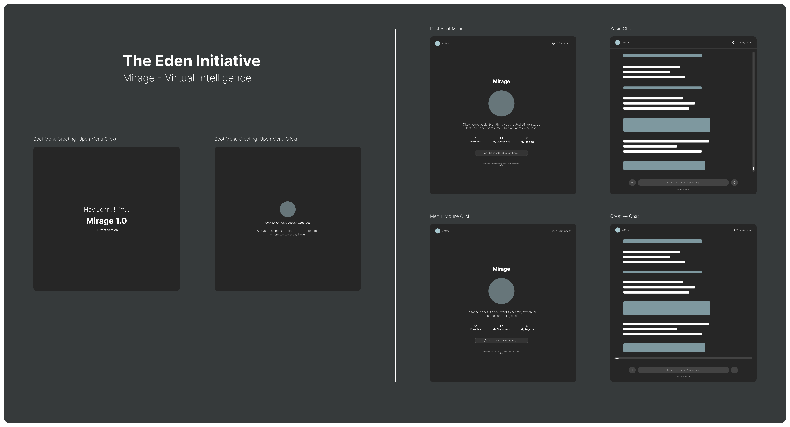

Product Design
Eden Initiative — AI Interaction System Design
Designed a structured AI interaction model to reduce cognitive load and improve clarity in user-system communication.

Overview
Modern AI products often combine conversation, control, and system behavior into a single surface. This makes interactions harder to understand, less predictable, and more cognitively demanding for users.
Problem
Users are expected to interact with AI systems without clear boundaries between what the system is doing, how it is responding, and how they can influence outcomes.
- System behavior feels unclear
- Interaction patterns become inconsistent
- Cognitive load increases during complex tasks
Solution
I designed a layered interaction model that separates AI experiences into distinct functional parts.
- Hardware layer: Input and output surfaces
- System layer: Logic, processing, and state management
- Personality layer: Conversational tone and user-facing behavior
This structure helps users better understand how the system works and interact with it more intentionally.
Impact
- Reduced ambiguity in AI interactions
- Improved clarity between system logic and conversational output
- Created a more scalable interaction framework for future AI features
Skills Demonstrated
- System-level product design
- Interaction design for AI interfaces
- Information architecture
- Cognitive load reduction
- Scalable design thinking